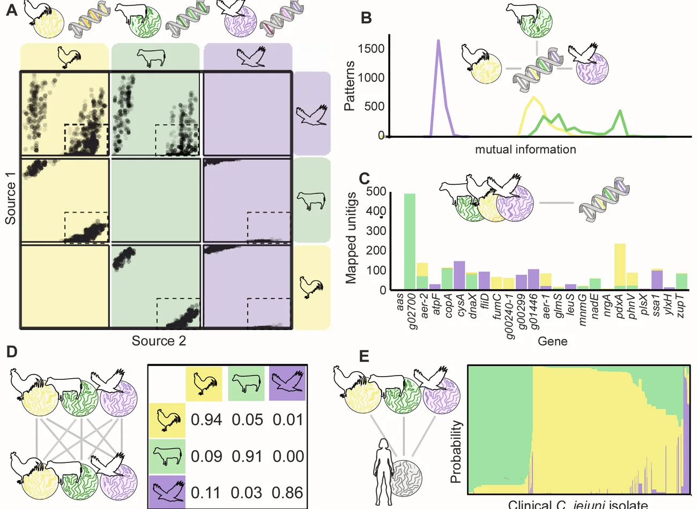

Proximity to humans is associated with antimicrobial-resistant enteric pathogens in wild-bird microbiomes
Current Biology · 2024
Research

Transmission
We combine coordinated sampling, epidemiology and source attribution to reconstruct movement across food systems, households, livestock, wildlife and environmental reservoirs.
The central challenge is to distinguish simple co-occurrence from plausible transmission while accounting for uneven sampling, recombination and local population structure.
Current Biology · 2024

Evolution
Host shifts are shaped by mutation, recombination, mobile genetic elements and repeated ecological contact. We study how those processes generate host specialism, generalism and emerging pathogenic lineages.
Campylobacter provides a powerful system because extensive gene flow can be studied alongside strong ecological and host-associated structure.
mBio · 2024

Open tools
Genomic surveillance becomes useful when methods, nomenclature and analytical workflows can be understood and reused outside a single project.
We develop open protocols, source-attribution methods, population annotation and version-controlled workflows that connect raw sequence data to interpretable bacterial populations.
bioRxiv · 2026

Prediction
Machine-learning and association approaches can identify genomic signals linked to source, resistance, host adaptation and clinical phenotype.
Models are evaluated against population structure, uncertainty and biological plausibility so that genomic signals can support surveillance and intervention.
Journal of Infection · 2024